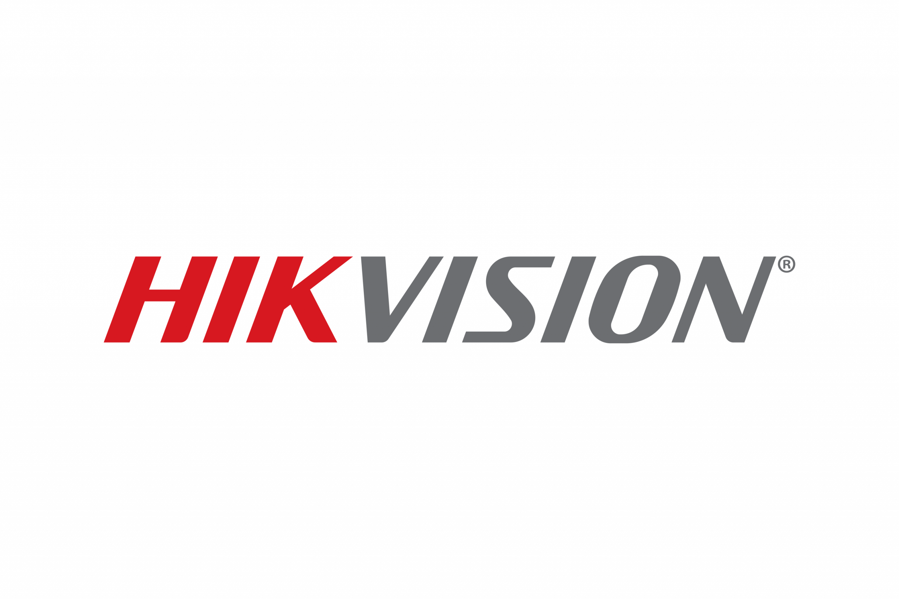

TECHNOLOGY. CONNECTED.HONG KONG · GREATER BAY AREA
2018扎根香港
05專業服務領域
01 / ABOUT RS以香港為本，面向更廣闊的未來
讀懂業務。
讓科技發揮價值。
晉嘉科技於 2018 年成立。我們將專業資訊設備、系統整合及工程服務連接起來，為企業建立穩健而靈活的科技基礎。
2025 年，我們成立進嘉科技（深圳）有限公司，將服務拓展至大灣區，與客戶一起邁向下一階段。
2018↗扎根香港
2025↗拓展大灣區
BUILT AROUND YOUR BUSINESS↗
RS / 2018PROFESSIONAL STANDARDS專業，體現在每一個細節
ASSURANCE & ACCREDITATION
以專業標準，
建立信任。
從資訊安全、環境責任到品質管理，
以清晰的管理標準，支持長遠的合作。
01
ISO 27001資訊安全管理以資訊安全管理為基礎，重視企業資訊與業務資料的保護。
MANAGEMENT SYSTEM
02
ISO 14001環境管理將環境管理融入日常營運，持續關注資源使用與環境影響。
MANAGEMENT SYSTEM
03
ISO 9001品質管理以品質管理規範服務流程，重視一致的交付與持續改善。
MANAGEMENT SYSTEM
04
CIC註冊分包商建造業議會註冊分包商，註冊編號 R017587。
R017587
02 / OUR EXPERTISECONNECTED SOLUTIONS
每個挑戰，
都有更好的連接。
由設備到系統，由基建到應用。
五大服務領域，回應您的實際需要。
不確定從哪裡開始？讓我們先了解您的業務。與我們交流 ↗
HAPCONNECT. BUILD. AUTOMATE.
DATAPEOPLEWORKFLOWDIGITAL TRANSFORMATION
把想法，
變成更高效的日常。
以 HAP 超級應用平台連接數據、團隊與流程。從內部管理到業務應用，透過無代碼開發與自動化，簡化重複工作。
03 / RESPONSIBILITY以科技向前，以責任同行
更好的科技。
更好的明天。
關注業務的成長，也關心成長的方式。
讓可持續發展，成為日常的一部分。
04 / TECHNOLOGY PARTNERSSTRONGER TOGETHER
連接領先科技品牌
匯聚專業科技，回應不同業務所需。
Lenovo

HikvisionTP-Link
Nocoly
LET'S BUILD WHAT'S NEXT
您的下一步，
由一次對話開始。
sales@rstech.com.hk ↗致電我們+852 3101 0403
HONG KONG
九龍九龍灣宏泰道12號
榮發工業大廈3樓310室
START A PROJECT↗